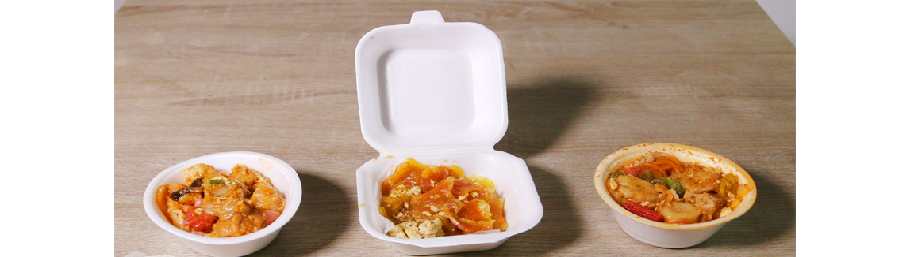

Seblak
Seblak merupakan makanan Indonesia, umumnya adalah makan khas dari Sunda Jawa Barat yang bercita rasa gurih dan pedas. Terbuat dari kerupuk basah yang dimasak dengan sayuran dan sumber protein seperti telur, ayam, boga bahari atau olahan daging sapi, dimasak dengan bumbu tertentu.
Seblak adalah makanan khas Bandung, Jawa Barat. Seblak kini menjadi makanan jajanan jalanan yang digemari berbagai kalangan masyarakat terutama di daerah Jawa Barat dan Jabodetabek. Seblak disajikan di rumah makan dan warung, serta dijajakan di gerobak pedagang keliling. Makanan yang bertekstur kenyal ini memiliki rasa yang pedas dan menyegarkan, serta memiliki beberapa variasi, baik rasa maupun bahan tambahan juga kemasan.